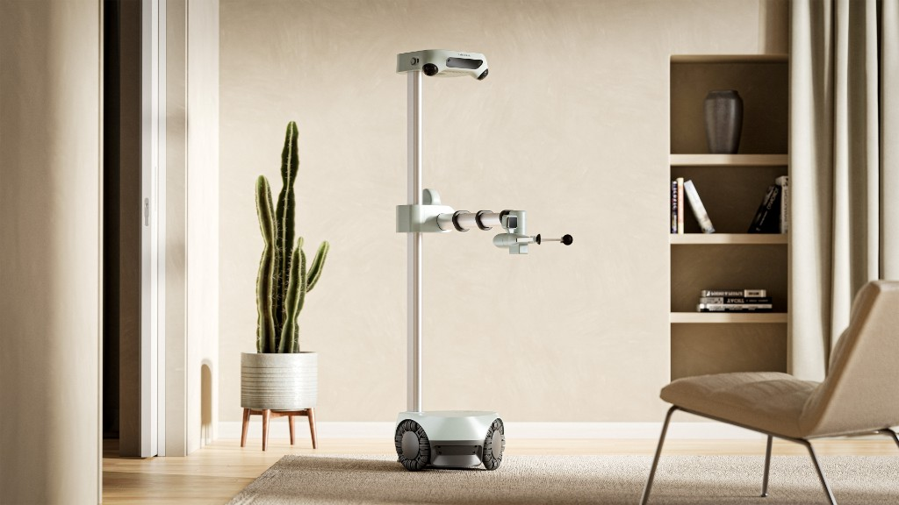

參考構型

這張是 Hello Robot Stretch 的參考圖。rover 只沿用底盤、升降立柱、側向伸縮與腕這條關節鏈。底盤用廣達既有四輪平台，機構與驅動自己做，不移植原廠馬達板與韌體。
拖曳旋轉，滾輪縮放。綠色為場地道具示意。
面板喇叭 ×2麥克風陣列LiDAR急停升降滑台
配置：左側桅桿帶升降滑台，伸縮臂朝右側伸出（與參考圖相同的側向配置），腕部俯仰＋偏航，夾爪可朝下抓取或朝側面勾拉。左前方立柱放面板、喇叭、麥克風與頭部相機。這是 rover 的概念包絡，尺寸與廣達底盤的實際規格需對照後修正。
| 關卡 | 要求 | 設計對應 | 驗收指標 |
|---|
以上是「紙上可行」的對照，不是已驗證。抽屜把手高度、藥盒外形、器具外形我沒有實測，須用長庚的真實藥車與器具確認。
| 項目 | 要求 | 本設計 | 狀態 |
|---|
重量估算（kg，皆為假設值）
廣達底盤的自重、載重與尺寸尚未取得，30 kg 為假設。靜態翻覆粗估：伸出 0.71 m 且持 2 kg 時，抗翻力矩約為翻覆力矩的 7 倍；實機需做伸出急停測試。
| 類別 | 品項 | NT$ | 產地／依據 | 信心 |
|---|
匯率 1 USD = 32 NT$。金額與 trc_plan、trc_cost 的建議方案相同：小計 1,142,500，加 15% 為 1,313,875。「估算」需報價取代。面板、喇叭、麥克風的品牌請在採購時核產地；Hello Robot Stretch 3 使用的 ReSpeaker 麥克風陣列為中國來源品牌，rover 不沿用。
| Hello Robot 項目 | 我們的用法 | 注意 |
|---|
我只看了 GitHub 組織頁列出的 61 個倉庫中的前 10 個與總覽，其餘未逐一檢查；授權以各倉庫 LICENSE 為準。公開頁面沒有看到機構 CAD 的倉庫，所以機構需自行設計。
| 風險 | 影響 | 對策 |
|---|
| 日期 | 里程碑 | 通過條件 |
|---|